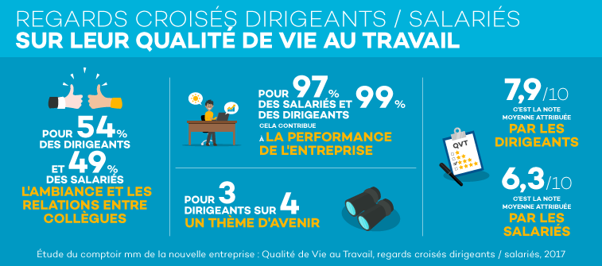

Contacts Presse
-
Elisabeth Alfandari +33(0)1 56 03 20 36La contacter
Le COMPTOIR mm de la nouvelle entreprise présente les résultats de l’étude Qualité de vie au travail 2017 de Malakoff Médéric
Communiqués et dossiers de presse - Groupe - 04/10/2017
Le niveau de perception de la qualité de vie au travail (QVT) demeure élevé : 71 % des salariés et 96 % des dirigeants estiment qu’il est bon ou très bon (note supérieure ou égale à 6/10). 2017 est marquée par une légère amélioration du point de vue des salariés sur la question (+ 2 points par rapport à 2016). Dans le même temps, la proportion des dirigeants attribuant une note supérieure à 8 sur 10 (68 %), tend à baisser (- 3 points).
Pour les salariés, comme pour les dirigeants, cette année encore, l’ambiance arrive en tête des déterminants de la QVT. L’étude met également en lumière les attentes fortes des salariés en matière de reconnaissance et de conciliation des temps de vie. Enfin, pour 3 dirigeants sur 4, la qualité de vie au travail sera dans l’avenir un thème de préoccupation majeur, notamment pour maîtriser l’absentéisme en entreprise.

(1) Étude menée auprès d’un échantillon représentatif (secteur, âge, genre, taille d’entreprise et statut) de 3 500 salariés et 500 dirigeants du secteur privé. Recueil des données respectivement en ligne et par téléphone durant le mois de mai 2017.
Qualité de vie au travail : des perceptions différentes entre salariés et dirigeants
Salariés et dirigeants s’accordent pour placer l’ambiance et les relations avec les collègues en tête des déterminants de la qualité de vie au travail (49 % pour les salariés et 53 % pour les dirigeants).
Pour les salariés, viennent ensuite la rémunération globale (pour 40 % des personnes interrogées, contre 42 % chez les dirigeants), puis la reconnaissance au travail (38 %, contre 40 %), et enfin la conciliation vie professionnelle/vie personnelle (37 % contre 15 %).
Pour les dirigeants, ce sont les relations avec le supérieur hiérarchique direct qui constituent le deuxième déterminant de la QVT (45 % contre 27 % pour les salariés), suivie de la rémunération globale pour 42 % d’entre eux et de la reconnaissance (40 %).
Les priorités évoluent en fonction de l’âge des salariés. Si « l’ambiance et les relations avec les collègues » reste le premier critère de QVT quel que soit l’âge des salariés, ce déterminant perd de l’importance avec le temps : il passe de 53 % chez les moins de 30 ans à 45 % chez les salariés de 50 ans et plus. Il en va de même pour la sensibilité à l’environnement de travail (35 % chez les moins de 30 ans contre 24 % pour les plus de 50 ans).
A contrario, le besoin de reconnaissance augmente au fil des années, passant de 34 % chez les moins de 30 ans à 42 % chez les 50 ans et plus.
Reconnaissance et conciliation des temps de vie : des attentes fortes des salariés
La reconnaissance, troisième déterminant de la qualité de vie au travail pour les salariés, n’est jugée satisfaisante que par la moitié d’entre eux. Elle constitue donc, selon eux, l’axe d’amélioration prioritaire de la QVT (pour 32 % des personnes interrogées).
Pour les salariés, le premier signe de reconnaissance est la valorisation financière de leurs efforts et succès (62 %), suivi par des félicitations lorsque leurs résultats sont satisfaisants (pour plus de 50 % d’entre eux). Un simple « bonjour » de la part de leur supérieur hiérarchique arrive en troisième position (57 %), alors qu’il constitue le premier signe de reconnaissance pour les dirigeants (pour 80 % d’entre eux). Enfin, les perspectives d’évolution professionnelle n’arrivent qu’en cinquième position des critères de reconnaissance pour les salariés (pour 48 % des personnes interrogées).
Pour les dirigeants, le salut des efforts fournis (66 %) et les remerciements de leurs clients (62 %) arrivent en deuxième et troisième position.
La conciliation des temps de vie, deuxième déterminant de la qualité de vie au travail pour les managers (44 %) et les cadres (42 %) demeure une source de difficultés pour 34 % des salariés (contre 27 % en 2009).
Les principales explications à cette situation sont liées aux conditions de trajet, difficiles pour 48 % des salariés interrogés, et supérieures à une heure pour 45 % d’entre eux. La difficulté de déconnexion est une autre raison de cet équilibre difficile à trouver entre vie professionnelle et vie personnelle. En effet, 31 % des salariés déclarent consulter régulièrement leurs mails professionnels en dehors du travail, y compris le matin, le soir et le week-end. Ce chiffre, en hausse depuis 2016, augmente significativement chez les managers (47 %) et les cadres (48 %).
Pour retrouver un équilibre, les salariés aimeraient des horaires de travail plus souples (45 %), un temps de travail réduit (29 %) ou une possibilité de télétravail (27 %).
La problématique des salariés aidants
Les 2/3 des salariés aidants (2) déclarent que leur situation a un impact sur leur vie professionnelle : changement des horaires de travail (33 %), réduction des heures de travail (29 %) ou travail à domicile (14 %). Et selon les dirigeants, l’aide apportée par un salarié à un proche se traduit par de l’absentéisme (59 % des personnes interrogées) et une perte de productivité (41 %).
Cependant, seuls 31 % des dirigeants interrogés sont en mesure d’estimer le nombre de salariés aidants présents dans leur entreprise, et ce sujet n’est aujourd’hui un thème de réflexion que pour 15 % d’entre eux.
Pour les aider à concilier vie professionnelle et vie personnelle, la majorité des salariés concernés (64 %) souhaitent être informés sur les aides disponibles : droits aux congés, aides financières, services à la personne… Près de 4 salariés aidants sur 10 (38 %) sont également en attente de formations spécifiques sur le thème : « mieux accompagner son proche aidé et comprendre sa pathologie ».
Pour les entreprises, les solutions les plus pertinentes à mettre en place concernent l’organisation du travail : aménagement du temps de travail (79 %), flexibilité des horaires (75 %) et polyvalence du personnel (69 %).
Des pistes d’amélioration peuvent également être explorées afin de permettre de libérer la parole sur le statut d’aidant : 30 % des salariés concernés souhaitent que leur entreprise mette en place des groupes de parole d’aidants. Ils sont néanmoins encore peu nombreux à en parler avec leur supérieur hiérarchique (30 %) ou avec un représentant des RH (18 %).
La qualité de vie au travail, un enjeu de performance
Dirigeants et salariés sont unanimes : plus de 9 personnes sur 10 estiment que la santé et la qualité de vie des salariés contribuent à la performance de l’entreprise. 75 % des dirigeants déclarent que la qualité de vie au travail sera dans l’avenir un thème de préoccupation majeur pour les entreprises, notamment pour augmenter la compétitivité (52 %), améliorer le climat social (51 %) et maîtriser l’absentéisme (40 %).
En effet, l'appréciation de la qualité de vie au travail a des répercussions directes sur l'absentéisme : un salarié déclarant une très bonne qualité de vie au travail (note de 8 à 10) est moins sujet aux arrêts maladie (- 37 %). A contrario, un salarié jugeant sa qualité de vie au travail mauvaise (note de 1 à 5) a 18 % plus de chance d’être arrêté au moins une fois dans l’année.
Chiffres clés Étude Absentéisme 2017 (3)
34,1 % des salariés sont absents au moins une fois dans l’année (contre 34,5 % en 2015). Ces arrêts de travail représentent l’équivalent de 43 emplois à temps plein (ETP) pour une entreprise de 1 000 salariés. La durée moyenne d’un arrêt maladie est de 18,9 jours calendaires (contre 18,8 en 2015). Le nombre moyen de jours d’absence par salarié absent s’élève à 35,5 jours (contre 35,3 en 2015).
lecomptoirmm.com
#comptoirmm
 @malakoffmederic
@malakoffmederic
Malakoff Médéric
(2) Enquête « Agir pour les salariés-aidants », menée par le Groupe Malakoff Médéric et la Fondation Médéric Alzheimer, auprès de 302 entreprises et de 221 salariés-aidants d’un proche (âgé dépendant, en situation de handicap ou ayant une maladie chronique invalidante).
(3) Analyse annelle des données d’absentéisme maladie issues du portefeuille des entreprises clientes de Malakoff Médéric, représentant 2 millions de salariés dans 61 000 entreprises. Les données analysées sont issues des Déclarations Annuelles des Données Sociales (DADS) de 2016.